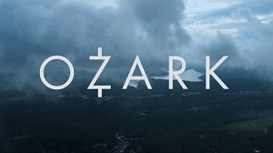

Ozark (TV series)
Ozark is an American crime drama streaming television series created by Bill Dubuque and >Mark Williams for Netflix and produced by Media Rights Capital.[1] [2][3] The series stars Jason Bateman and Laura Linney as Marty and Wendy Byrde, a married couple who relocate their family to the Lake of the Ozarks for money laundering.[4][5] Bateman also serves as a director and executive producer for the series.[6][7] The ten-episode first season was released on July 21, 2017;[3][8] the ten-episode second season was released on August 31, 2018,[9] and the third season (also ten episodes) was released on March 27, 2020.[10][11] In June 2020, the series was renewed for a fourth and final season, which will consist of 14 episodes split into two parts and be released in 2022.[12][13]
Ozark has received a largely positive reception from critics, with praise towards its tone, acting, directing, and writing. The series has received 32 Primetime Emmy Award nominations including two for Outstanding Drama Series, with Bateman winning for Outstanding Directing for a Drama Series in 2019 and Julia Garner winning twice consecutively for Outstanding Supporting Actress in a Drama Series in 2019 and 2020. Bateman has received two further Golden Globe Award nominations for Best Actor – Television Series Drama.